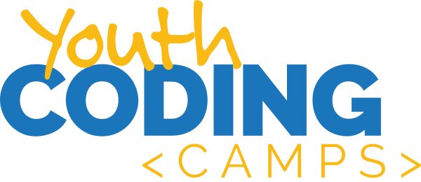

<!DOCTYPE html>
<!--[if lt IE 7 ]><html class="ie ie6" lang="en"> <![endif]-->
<!--[if IE 7 ]><html class="ie ie7" lang="en"> <![endif]-->
<!--[if IE 8 ]><html class="ie ie8" lang="en"> <![endif]-->
<!--[if (gte IE 9)|!(IE)]><!--><html lang="en"> <!--<![endif]-->
  <head>
    <meta charset="utf-8">
  	<title>Youth Education | Marquette Tech Institute</title>
  	<meta name="description" content="Helping to further programming education and technology in Southeast Missouri.">
  	<meta name="viewport" content="width=device-width, initial-scale=1, maximum-scale=1">
    <link rel="apple-touch-icon" sizes="57x57" href="/apple-touch-icon-57x57.png">
    <link rel="apple-touch-icon" sizes="60x60" href="/apple-touch-icon-60x60.png">
    <link rel="icon" type="image/png" href="/favicon-32x32.png" sizes="32x32">
    <link rel="icon" type="image/png" href="/favicon-16x16.png" sizes="16x16">
    <link rel="manifest" href="/manifest.json">
    <link rel="mask-icon" href="/safari-pinned-tab.svg" color="#5bbad5">
    <meta name="msapplication-TileColor" content="#da532c">
    <meta name="theme-color" content="#ffffff">
    <meta property="og:image" content="http://www.marquettetechinstitute.org/assets/img/background-youth.jpg" />
    <!-- Bootstrap core CSS -->
    <link href="assets/css/cssloader.css" rel="stylesheet">
    <link href="main.css" rel="stylesheet">

    <script>
      (function(i,s,o,g,r,a,m){i['GoogleAnalyticsObject']=r;i[r]=i[r]||function(){
      (i[r].q=i[r].q||[]).push(arguments)},i[r].l=1*new Date();a=s.createElement(o),
      m=s.getElementsByTagName(o)[0];a.async=1;a.src=g;m.parentNode.insertBefore(a,m)
      })(window,document,'script','https://www.google-analytics.com/analytics.js','ga');

      ga('create', 'UA-52338749-8', 'auto');
      ga('send', 'pageview');

    </script>
  </head>
  <body>

<!-- ==========================================================================
   Navigation
   ========================================================================== -->
<header>
  <nav class="navbar navbar-default navbar-fixed-top">
      <div class="container">
        <div class="navbar-header">
          <button type="button" class="navbar-toggle collapsed" data-toggle="collapse" data-target="#navbar" aria-expanded="false" aria-controls="navbar">
            <span class="sr-only">Toggle navigation</span>
            <span class="icon-bar"></span>
            <span class="icon-bar"></span>
            <span class="icon-bar"></span>
          </button>
          <a class="navbar-brand" href="http://www.marquettetechinstitute.org/#" style="margin-top:15px;"></a>
        </div>
        <div id="navbar" class="navbar-collapse collapse" aria-expanded="false" style="height: 1px;">
          <ul class="nav navbar-nav navbar-right">
            <li><a href="https://www.marquettetechinstitute.org/">HOME</a></li>
            <li class="active"><a href="https://www.marquettetechinstitute.org/#programs" >PROGRAMS</a></li>
            <li><a href="https://www.marquettetechinstitute.org/#about-mti" >ABOUT</a></li>
            <li><a href="https://www.marquettetechinstitute.org/#contact">CONTACT</a></li>
          </ul>
        </div><!--/.nav-collapse -->
      </div>
    </nav>
</header>

<section id="adult" class="parallax">
		<div id="pall-youth" class="parallax-bg"></div><div class="overlay"></div>
		<div class="content text-center">
			<div class="container">
				<div class="row">
				<div id="adult-slide" class="col-lg-10 col-md-10 col-sm-12 col-xs-12 col-lg-offset-1 col-md-offset-1">

				</div>
				<div class="container">
					<div class="title-sections whiten">
						<h1 class="title-section whiten" style="padding-top:30px;color:white;"><strong>Youth Education</strong></h1>
						<p class="description-section whiten">Introductory and intermediate programs for youth and young adults that teach basic programming and problem solving skills that will benefit them no matter what career they choose.</p>
    					</div>
				</div>
			</div>
		</div>
    </div>
</section>

<!-- ==========================================================================
   Youth
   ========================================================================== -->
<section id="youth">
	<div class="container">

		<div class="">
      <h2 class="text-center" style="color:#fff; margin-top: 50px; margin-bottom:50px;">Youth Coding Programs</h2>

      <div class="tab-content" style="padding-bottom: 80px; margin-bottom: 80px; border-bottom: 1px solid #B6DBFF;">
  			<div class="tab-pane fade active in" id="t-about">
  				<div class="container">
  					<div class="row">
  						<div class="col-md-6">
  							<div class="set-bg red" data-uk-scrollspy="{cls:'uk-animation-scale-up'}">
  								
  								<h3 class="set-title" style="color: #37393F">Returning in Summer 2019</h3>
  								<p class="set-description" style="color: #989898; margin-bottom: 20px;">For kids in grades 3-6 who are interested in basic programming</p>
                  <div class="visible-lg" style="height: 25px;"></div>
                  <a href="#finch" class="button button-small">Learn More</a>
                </div>
  						</div>
  						<div class="col-md-6" data-uk-scrollspy="{cls:'uk-animation-scale-up', delay: 900}">
  							<div class="set-bg red">
  								
  								<h3 class="set-title" style="color: #37393f">Fall 2018 Semester</h3>
  								<p class="set-description" style="color: #989898; margin-bottom: 20px;">A FREE after-school program for middle schools</p>
                  <div class="visible-md" style="height: 25px;"></div>
                  <div class="visible-lg" style="height: 25px;"></div>
                  <a href="#league" class="button button-small">Learn More</a>
                </div>
  						</div>
  					</div>
  				</div>
  			</div>
  		</div>

      <!-- YOUTH CODING -->

      <a id="finch"></a>
      <div class="row" style="padding-bottom: 25px;">
        <div class="col-sm-3">
          <p></p>
          <h4 class="media-heading">Stay Tuned for Summer 2019 Camp Info!</h4>

          <p>For more information, contact Stacy Dohogne Lane:<br />
            <a href="mailto:stacy@codefiworks.com">stacy@codefiworks.com</a><br />
            <a href="tel:573-335-9675">(573) 335-9675</a></p>

          <a href="http://eepurl.com/cftDyH" class="button button-small"
            style="margin: 20px 0;">Get Email Updates</a>
        </div>
        <div class="col-sm-9">
          <p>Our 2018 Youth Coding Camps were a big hit with kids and parents alike! Kids entering grades 3-4 learned problem-solving and computer programming skills as they made their <a href="https://www.finchrobot.com/" target="_blank">Finch</a>, a small robot operated with coding, do sweet dance moves and navigate obstacle courses they designed. Kids worked in small teams throughout the week, learning and using the Scratch programming language to operate their robots. Camp culminated in a demo session attended by the campers' families. The kids received hands-on coding education that will translate into in-demand skills.</p>

          <p>Kids entering grades 5-6, as well as kids who already completed a Finch camp, built on their problem-solving and computer programming skills as they put their <a href="https://ozobot.com/products/ozobot-evo" target="_blank">Evo</a> robots through their paces. Working in small teams, kids learned to use the Scratch programming language to code their Evo robots. Camp culminated in a demo session attended by the campers' families, where the kids showed off what they learned.</p>

          <p><strong>Be on the lookout for scheduling and programming information for our 2019 Youth Coding Camps! <a href="http://eepurl.com/cftDyH">Sign up for our email updates</a> for the latest.</strong></p>

        </div>
      </div>

      <div class="row" style="border-bottom: 1px solid #B6DBFF; padding-bottom: 25px;">
        <div class="col-sm-4">
          
        </div>
        <div class="col-sm-4">
          
        </div>
        <div class="col-sm-4">
          
        </div>
      </div>

      <!-- CODING WITH THE FINCH -->

      <!--
      <a id="finch"></a>
      <div class="row" style="padding-bottom: 25px;">
        <div class="col-sm-3">
          <p></p>
          <h4 class="media-heading">Coding with the Finch</h4>
          <p style="margin-bottom: 20px;">June 18-22 • 9am-Noon<br />
          <span style="font-size: 12px; color: #FFF;">(Camp is Over!)</span></p>
          <p style="margin-bottom: 10px;">June 25-29 • 9am-Noon<br />
          <span style="font-size: 12px; color: #FFF;">(Camp is Full!)</span></p>
        </div>
        <div class="col-sm-9">
          <p>Last year’s popular coding camps are back! Kids going into grades 3-4 will learn problem-solving and computer programming skills as they make their <a href="https://www.finchrobot.com/" target="_blank">Finch</a>, a small robot operated with coding, do sweet dance moves and navigate obstacle courses they design. Kids will work in small teams throughout the week, learning and using the Scratch programming language to operate their robots. Camp culminates in a demo session families are invited to. This is hands-on coding education that will translate into in-demand skills.</p>

          <p>Typical day at camp:</p>

          <ul>
            <li>9am: Coding skills</li>
            <li>10am: Computer science unplugged break</li>
            <li>10:30am: Snack break</li>
            <li>10:45am: Finch robot exercises</li>
            <li>11:45am: Daily demonstrations - show off what you learned.</li>
            <li>12pm: Camp concludes</li>
          </ul>

          <p>Coding with the Finch is offered daily the week of June 18 from 9am-12pm each day, as well as the week of June 25 from 9am-12pm each day. If your child loved Coding with the Finch last summer and is ready for something new, check out Coding with Evo camps running the weeks of July 9 and July 16.</p>

          <ul>
            <li><strong>$75 fee</strong></li>
            <li><strong>Space is limited to 20 campers</strong></li>
          </ul>

        </div>
      </div>

      <div class="row" style="border-bottom: 1px solid #B6DBFF; padding-bottom: 25px;">
        <div class="col-sm-4">
          
        </div>
        <div class="col-sm-4">
          
        </div>
        <div class="col-sm-4">
          
        </div>
      </div>

      -->

      <!-- CODING WITH EVO -->

      <!--

      <a id="evo"></a>
      <div class="row" style="border-bottom: 1px solid #B6DBFF; margin-top: 50px;">
        <div class="col-sm-3">
          <p></p>
          <h4 class="media-heading" style="margin-top: 25px;">Coding with Evo</h4>
          <p style="margin-bottom: 20px;">July 9-13 • 9am-Noon<br />
          <span style="font-size: 12px; color: #FFF;">(Camp is Full!)</span></p>
          <p style="margin-bottom: 0;">July 16-20 • 9am-Noon<br />
          <span style="font-size: 12px; color: #FFF;">(Camp is Full!)</span></p>
        </div>
        <div class="col-sm-9">
          <p>If your child loved Coding with the Finch last summer and is ready for something new, or has basic coding skills, Coding with Evo will be a hit. Kids going into grades 5-6, OR kids who have already completed a Finch camp, will build on their problem-solving and computer programming skills as they put their <a href="https://ozobot.com/products/ozobot-evo" target="_blank">Evo</a> robots through their paces. Working in small teams, kids will learn and use the Scratch programming language to code their Evo robots. Camp culminates in a demo session families are invited to, where kids will show off what they’ve learned.</p>

          <p>Typical day at camp:</p>

          <ul>
            <li>9am: Coding skills</li>
            <li>10am: Computer science unplugged break</li>
            <li>10:30am: Snack break</li>
            <li>10:45am: Evo robot exercises</li>
            <li>11:45am: Daily demonstrations - show off what you learned.</li>
            <li>12pm: Camp concludes</li>
          </ul>

          <p>Coding with Evo camps are offered the week of July 9 from 9am-12pm each day, as well as the week of July 16 from 9am-12pm each day. Looking for a more basic coding camp? Coding with the Finch camps are taking place the weeks of June 18 and June 25. Coding with Finch is recommended first.</p>

          <ul>
            <li><strong>$75 fee</strong></li>
            <li><strong>Space is limited to 20 campers</strong></li>
          </ul>


          <div class="row" style="padding-bottom: 25px;">
            <div class="col-sm-6">
              
            </div>
            <div class="col-sm-6">
              
            </div>
          </div>

        </div>
      </div>

      -->

      <!-- YOUTH CODING LEAGUE -->

      <a id="league"></a>
      <div class="row" style="padding-bottom: 25px; margin-top: 50px;">
        <div class="col-sm-3">
          <p></p>
          <h4 class="media-heading" style="margin-bottom: 30px; line-height: 24px;">Spring 2019 Semester<br />
          Bring this FREE after-school program to your middle school students!</h4>

          <p>For more information, contact Stacy Dohogne Lane:<br />
            <a href="mailto:stacy@codefiworks.com">stacy@codefiworks.com</a><br />
            <a href="tel:573-335-9675">(573) 335-9675</a></p>

          <a href="assets/img/brochure-youth-coding-league.pdf" class="button button-small"
            style="margin:20px 0;">Download Flyer</a>

        </div>
        <div class="col-sm-9">
          <h4 style="margin-top: 25px; line-height: 24px;">What is the Youth Coding League?</h4>
          <p>The Youth Coding League is a free after-school program for middle school students, supported by the Marquette Technology Institute, using Google’s CS First curriculum and the Scratch programming language.</p>
          <p>The Marquette Technology Institute will implement the Youth Coding League at <strong>no cost</strong> to schools.</p>
          <p>The Marquette Technology Institute provides support to schools with stipends for teachers (Coaches) and assistants from the local community (Tech Pros), and promotional materials.</p>
          <p>The Marquette Technology Institute will organize an awards party at the conclusion of the semester-long program, where students from the region come together to showcase their projects to the community.</p>

          <h4 style="margin-top: 40px; line-height: 24px;">Why computer science and programming are important to middle-schoolers:</h4>
          <div class="row" style="margin-top: 30px; margin-bottom: 30px;">
            <div class="col-sm-4 text-center">
              
              <p style="font-size: 14px;">They instill logical thinking and<br />problem-solving skills, empowering kids to take part in the digital workplace of the future.</p>
            </div>
            <div class="col-sm-4 text-center">
              
              <p style="font-size: 14px;">They help kids improve academically, teaching them to solve problems and set themselves up for future success with<br class="hidden-xs" />in-demand skills.</p>
            </div>
            <div class="col-sm-4 text-center">
              
              <p style="font-size: 14px;">They are widely applicable, 21st-century skills that contribute to a well-rounded, academically comprehensive student.</p>
            </div>

          </div>

          <h4 style="margin-top: 40px; line-height: 24px;">More about the Marquette Tech Institute’s support</h4>
          <p><strong>Personal Development - </strong>Teachers are invited to the showcase days of the youth summer coding camps to get a glimpse of computer programming with youth. MTi will host eight 3-hour personal development sessions throughout June and July, where teachers learn more about the Youth Coding League, the Scratch language, and what MTi is looking for in a Coach.</p>
          <p><strong>In-School Workshops - </strong>MTi will offer in-school workshops to complete more in-depth training with Coaches that will be leading the Youth Coding League in their schools.</p>
          <p><strong>Coaches - </strong>The Coach is a teacher in the school with a passion for or interest in coding education. Coaches will facilitate 1-1.5 hour after-school sessions throughout the semester. Coaches are responsible for booking computer lab space, learning the curriculum, running the after-school program, assisting students, monitoring students’ progress, troubleshooting equipment, working with the Tech Pro, and working with the Marquette Technology Institute to share student progress and insights on the program.</p>
          <p><strong>Tech Pros - </strong>The Tech Pro is a community member with a passion for or interest in coding education. Tech Pros are provided by the Marquette Tech Institute and will help Coaches facilitate the after-school program. Tech Pros are responsible for helping students when they’re stuck, troubleshooting equipment, and working with the Coach.</p>

          <div class="row" style="margin-top: 50px;">
            <div class="col-sm-6">
              
            </div>
            <div class="col-sm-6">
              
            </div>
          </div>

          <h4 style="margin-top: 20px; line-height: 24px;">What to know about Google CS First</h4>

          <ul>
            <li>8 sessions that introduce coding to kids ages 9-14.</li>
            <li>Themes include music, sound, and game design, using the Scratch programming language.</li>
            <li>Kids work their way through each theme, and the program culminates in a project they can share with classmates, family, and friends.</li>
            <li>Designed to give kids with no prior computer programming or coding knowledge a solid foundation in logic and problem-solving.</li>
          </ul>

          <h4 style="margin-top: 40px;">Want to bring the FREE Youth Coding League to your school?</h4>

          <p>Contact Stacy Dohogne Lane:<br />
            <a href="mailto:stacy@codefiworks.com">stacy@codefiworks.com</a><br />
            <a href="tel:573-335-9675">(573) 335-9675</a></p>

          <a href="assets/img/brochure-youth-coding-league.pdf" class="button button-small"
            style="margin:20px 0;">Download Flyer</a>

        </div>
      </div>

		</div>
	</div>
</section>

<!-- ==========================================================================
   SubFooter
   ========================================================================== -->
  <div class="subfooter">
 		<div class="container">
 			<div class="row">
         <div class="col-md-12 text-center">
             <p>© Copyright <script>document.write(new Date().getFullYear())</script><br class="visible-xs" /> Marquette Tech District Foundation<br /><a href="privacy.html">Privacy Policy</a></p>
         </div>
       </div>
 		</div>
 	</div>

<!-- JAVASCRIPT -->
<footer>
<script type="text/javascript" src="assets/js/jquery.min.js"></script>
<script type="text/javascript" src="assets/js/jquery-migrate-1.2.1.min.js"></script>
<script type="text/javascript" src="assets/js/modernizr.min.js"></script>
<script type="text/javascript" src="assets/js/bootstrap.min.js"></script>
<script type="text/javascript" src="assets/js/jquery.easing.min.js"></script>
<script type="text/javascript" src="assets/js/nav/jquery.nav.js"></script>
<script type="text/javascript" src="assets/js/nav/jquery.scrollTo.js"></script>
<!--	<script type="text/javascript" src="assets/js/nav/sscr.js"></script>-->
<script type="text/javascript" src="assets/js/uikit/uikit.min.js"></script>
<!--	<script type="text/javascript" src="assets/js/nav/navbar.js"></script>-->
<script type="text/javascript" src="assets/js/parallax/jquery.parallax-1.1.3.js"></script>
<script type="text/javascript" src="assets/js/video/jquery.backgroundvideo.min.js"></script>
<!-- <script type="text/javascript" src="assets/js/jquery.easypiechart.js"></script> -->
<script type="text/javascript" src="assets/js/jquery.mixitup.min.js"></script>
<script type="text/javascript" src="assets/js/magnific-popup/jquery.magnific-popup.min.js"></script>
<!-- <script type="text/javascript" src="assets/js/flexslider/jquery.flexslider-min.js"></script> -->
<!-- <script type="text/javascript" src="assets/js/jquery-caroufredsel-6.2.1/jquery.caroufredsel-6.2.1-packed.js"></script> -->
<!-- <script type="text/javascript" src="assets/js/jquery-touchswipe-1.0/jquery.touchswipe.min.js"></script> -->
<!-- <script type="text/javascript" src="assets/js/jquery-caroufredsel-6.2.1/fredsel.js"></script> -->
<!-- <script type="text/javascript" src="http://maps.google.com/maps/api/js?sensor=false"></script> -->
<!-- <script type="text/javascript" src="assets/js/gmap/script.js"></script> -->
<script type="text/javascript" src="assets/js/appear.js"></script>
<script type="text/javascript" src="assets/js/main.js"></script>
<script>
jQuery(document).ready(function($) {
'use strict';
     var videobackground = new jQuery.backgroundVideo(jQuery('#quote'),
    {
    "align": "centerXY",
    "width": 1280,
    "height": 720,
    "path": "assets/videos/",
    "filename": "cloud",
    "types": ["mp4","ogg","webm"]
    });
});
</script>

</footer>

</body>
</html>
